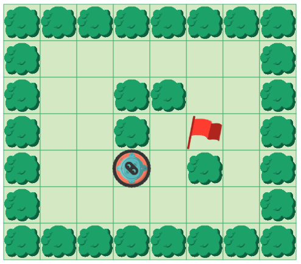
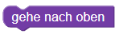
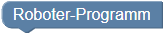
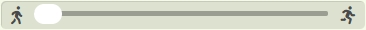

Einführung

Programmiere den Roboter:
Der Roboter soll das Feld mit der roten Flagge erreichen, ohne gegen die Hindernisse  zu laufen. Dir stehen dafür sechs Bausteine zur Verfügung.
zu laufen. Dir stehen dafür sechs Bausteine zur Verfügung.
Benutze dafür die Bausteine und  und hänge sie an den Startbaustein . Klicke anschließend auf , um das Programm überprüfen zu lassen.
Mit diesem Button startest du dein Programm.
Mit diesem Button setzt du den Roboter auf die Startposition zurück.
Mit diesem Button kannst du dein Programm Schritt für Schritt durchgehen.
Mit diesem Button wird direkt das Ergebnis deines Programms angezeigt.
 Mit dem Schieberegler kannst du die Geschwindigkeit einstellen, mit dem das Programm ausgeführt wird.
Um den Roboter zu bewegen verwenden wir Funktionen, die uns zur Verfügung gestellt werden. Jeder Befehl muss in einer eigenen Zeile stehen. In der ersten Zeile muss immer stehen:
from robot import *Hier stehen uns die folgenden Funktionen (erkennbar an den runden Klammern) zur Verfügung:
rechts() : bewegt den Roboter einen Schritt nach rechts
oben() : bewegt den Roboter einen Schritt nach oben